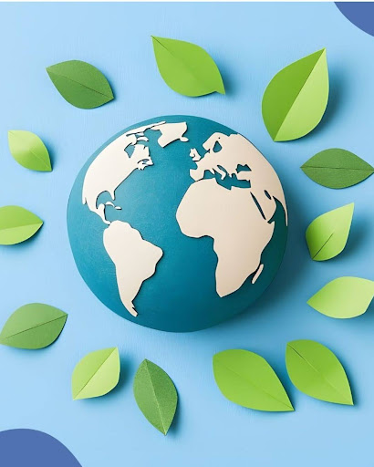
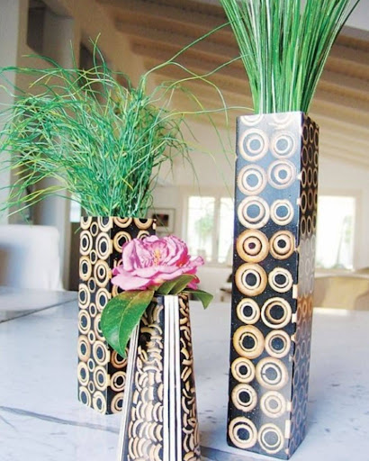
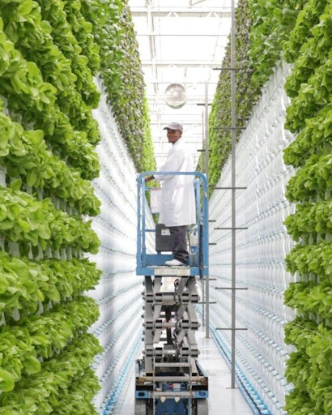

Futuro Sustentável
Equilíbrio entre Produção e Meio Ambiente

O que é sustentabilidade?
É atender às necessidades do presente sem prejudicar as futuras gerações. É o equilíbrio entre economia, sociedade e meio ambiente.
"Pense na Amazônia: se exagerarmos na extração, ficamos sem floresta para sempre."
Problemas Atuais
- Desmatamento: 11 mil km² de floresta perdidos na Amazônia em 2023.
- Poluição: Fábricas poluem rios vitais, como o Tietê.
- Aquecimento Global: Derretimento de geleiras e aumento do nível do mar.
- Paraná: Expansão da soja competindo com a Mata Atlântica.

Soluções Inovadoras
Energia e Agro
O Brasil é líder em energia eólica e hidrelétrica (Itaipu). O plantio direto reduz a erosão em 70%.
Tecnologia
Fazendas verticais produzem em SP sem desmatar. A Embrapa cria sementes que usam menos água.

Nossos Papéis: Reduza, Recicle, Reutilize
Pequenas ações geram grandes mudanças. Reduza plásticos, apoie marcas sustentáveis e vote em políticas verdes.